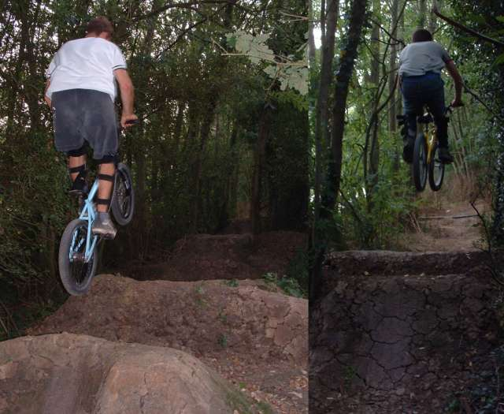
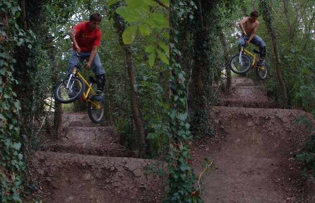
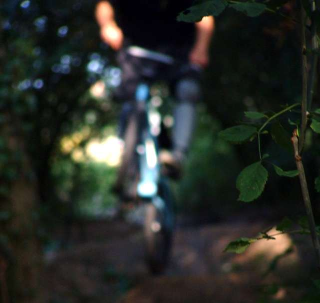
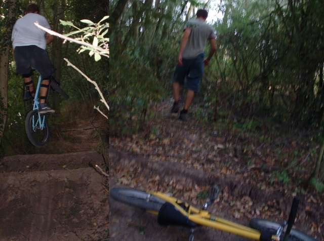

|
newstuff messages
pictures movies
archive links
|
|||||||||
|
 i am still getting used to having a yellow bike. it looks funny in pictures. above left - tim on the first, right - me on the third. below, two different lookback attempts. the bar keeps on whacking my leg, and its a bit bow legged as well, which seems to be a major problem with my riding. it stops me tableing flat and xuping.   arty picture which i like, but you might be annoyed at having to wait for it to download. sorry. if you think about it trails are weird. firstly, they are made out of mud, secondly they are a lot of hard work and thirdly you can't ride them half the year. i guess that's why most people don't bother. for people who live somewhere like me it's easier to have trails. the skatepark is about 10 miles away. on the other hand there are 3 sets of trails within a mile of my house. below - tim does that sometimes - i think he should turn it into a turndown.
on the right it looks like a i am mad about something, but i think i am going to
urinate. if you look closely you can see the massive rip in the back of my
shorts.  |